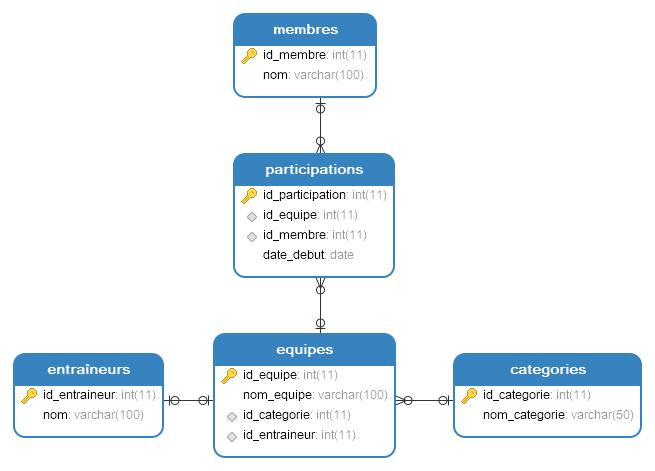

Vous devez créer une base de données pour gérer un club de sport scolaire. Le club organise des équipes, recrute des membres (élèves), et attribue des entraîneurset des participations.
Voici les règles :
Chaque équipe a un seul entraîneur (relation 1:1 entre Equipes et Entraîneurs).
Un membre peut participer à plusieurs équipes au fil du temps (relation 1:N entre Membres et Participations).
Chaque équipe appartient à une catégorie de sport (comme "Football", "Basket"), et une catégorie regroupe plusieurs équipes (relation 1:N entre Categories et Equipes).
2. Objectif
Vous devrez :
Créer les tables avec les cardinalités appropriées.
Ajouter des contraintes (clés primaires, clés étrangères).
Insérer des données pour tester les relations.
3. Vos instructions
Étape 1 : Création des tables
Créez les tables suivantes dans MariaDB avec les colonnes et contraintes nécessaires :
Colonnes : id_equipe (clé primaire), nom_equipe, id_categorie (clé étrangère vers Categories), id_entraineur (clé étrangère vers Entraîneurs, unique pour 1:1)..
Membres : contient les membres du club.
Colonnes : id_membre (clé primaire), nom.
Participations : suit les participations des membres aux équipes.
Colonnes : id_participation (clé primaire), id_equipe (clé étrangère vers Equipes), id_membre (clé étrangère vers Membres), date_debut..
Étape 2 : Écriture du code SQL
Voici une solution possible :
Étape 3 : Insertion de données
Exemple de données pour tester :
Étape 4 : Tests et questions
Testez la contrainte 1:1 : Essayez d’ajouter une nouvelle équipe avec un id_entraineur déjà utilisé (par exemple, id_entraineur = 1). Que se passe-t-il ? (Erreur à cause de UNIQUE.)
Testez la contrainte 1:N : Ajoutez une autre participation pour Sophie dans une autre équipe. Est-ce possible ? (Oui.)
Requête : Affichez les équipes avec leur entraîneur, leurs membres et leur catégorie :
Voici le diagramme entité-relation (ER) correspondant :

5. Modèle Conceptuel de Données (MCD)
Voici le MCD correspondant au format textuel :
Entités :
Catégorie (id_categorie, nom_categorie)
Entraîneur (id_entraineur, nom)
Équipe (id_equipe, nom_equipe)
Membre (id_membre, nom)
Participation (id_participation, date_debut)
Associations :
Regroupe : Catégorie (1,N) → Équipe (0,1)
Dirige : Entraîneur (0,1) → Équipe (0,1)
Participe : Membre (1,N) → Participation (0,1)
Concerne : Équipe (1,N) → Participation (0,1)
Explication des cardinalités:
Catégorie → Équipe (1,N → 0,1) : Une catégorie peut regrouper plusieurs équipes (1,N), mais une équipe est associée à une seule catégorie (0,1, car une équipe doit avoir une catégorie, mais techniquement, une catégorie peut exister sans équipe).
Entraîneur → Équipe (0,1 → 0,1) : Un entraîneur peut diriger au plus une équipe (0,1), et une équipe peut avoir au plus un entraîneur (0,1). Les deux peuvent exister indépendamment.
Membre → Participation (1,N → 0,1) : Un membre peut participer à plusieurs équipes (1,N), mais une participation est liée à un seul membre (0,1).
Équipe → Participation (1,N → 0,1) : Une équipe peut avoir plusieurs participations (1,N), mais une participation concerne une seule équipe (0,1).
6. Représentation graphique du MCD
Si vous souhaitez dessiner le MCD voici comment il pourrait être structuré :
Boîtes (entités) : Rectangles pour chaque entité (Catégorie, Entraîneur, Équipe, Membre, Participation) avec leurs attributs à l’intérieur.
Liens (associations) : Lignes entre les entités avec les cardinalités indiquées :
Catégorie → Équipe : "Regroupe" (1,N → 0,1)
Entraîneur → Équipe : "Dirige" (0,1 → 0,1)
Membre → Participation : "Participe" (1,N → 0,1)
Équipe → Participation : "Concerne" (1,N → 0,1)
Exemple de disposition graphique :
Place Équipe au centre.
Catégorie et Entraîneur se connectent à Équipe (en haut ou à gauche/droite).
Membre et Participation se connectent à Équipe (en bas ou à gauche/droite).